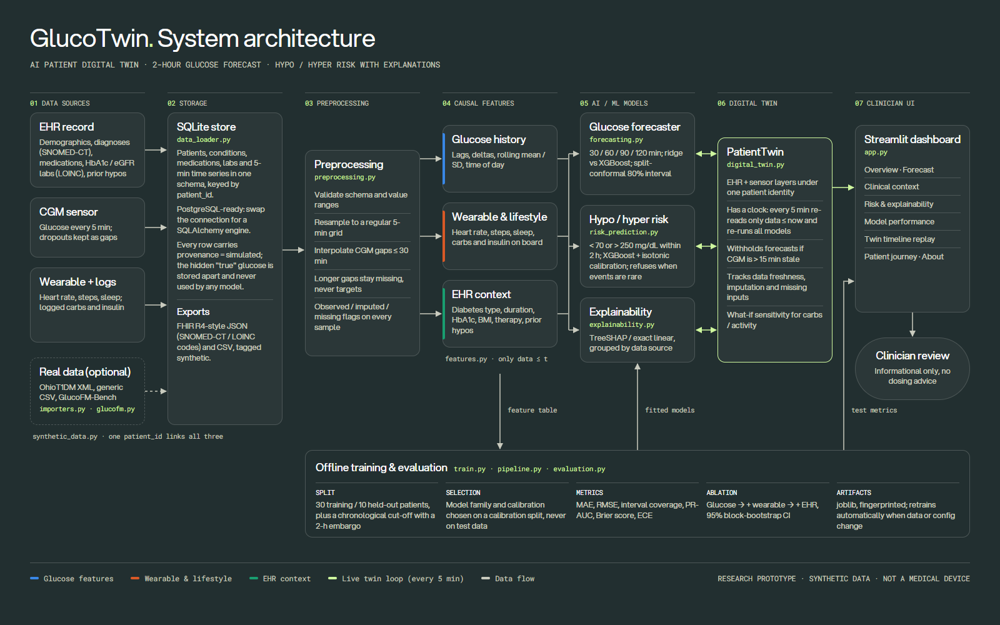
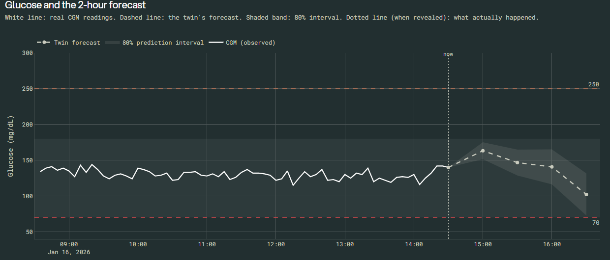
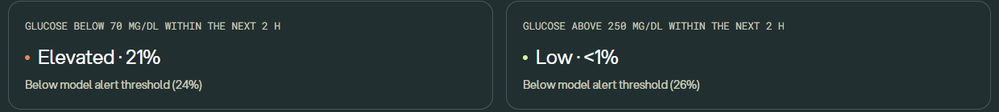
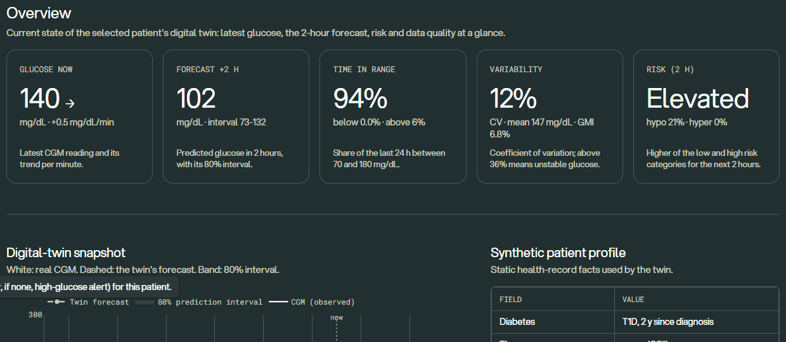
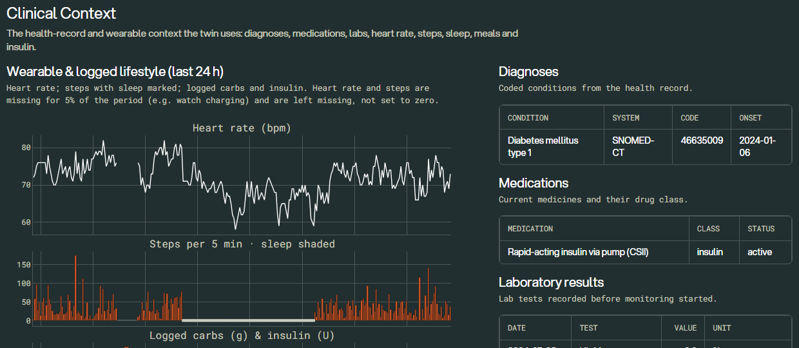
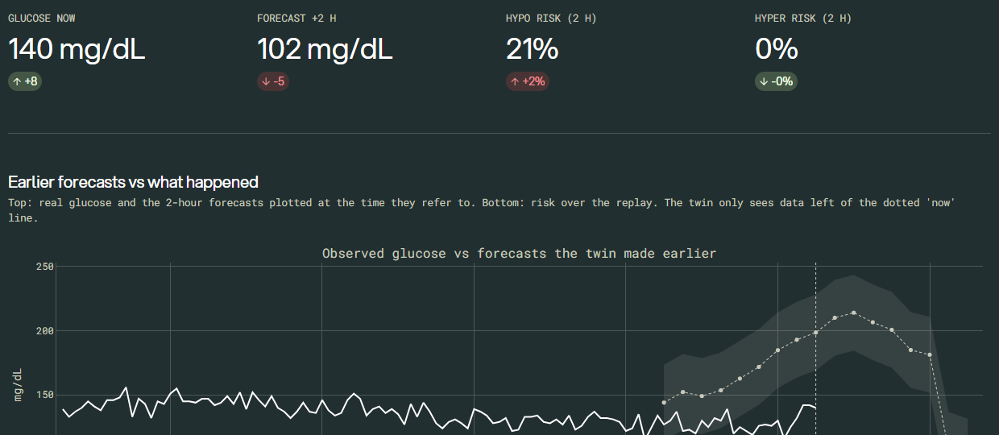
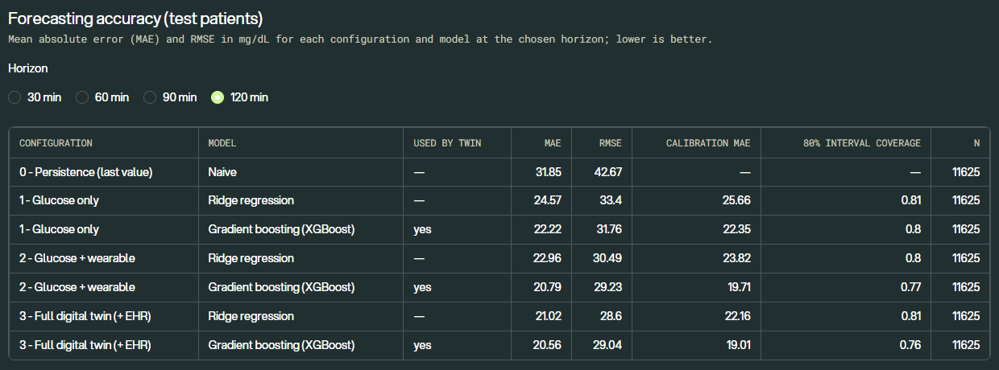

Diabetes type, HbA1c, medications, history of hypoglycaemia.
Glucose trend, heart rate, activity, sleep, meals and insulin.
Clinicians rarely see both sources together, and most CGM alerts react to the current value instead of the next two hours.
Can a patient digital twin that fuses static EHR context with live sensor streams forecast glucose 2 hours ahead, flag threshold crossings, and show whether each data source actually helps?
mg/dL now, rising
forecast in 2 h
hypo risk · elevated
Glucose is still rising after a meal, yet the twin expects it to fall. Top drivers: insulin logged in the last 2 h and insulin on board. A trend-only alarm would miss this.
GlucoTwin combines each patient's EHR record with their CGM and wearable stream, forecasts the next 2 hours with uncertainty, estimates calibrated low / high risk, and explains every prediction in a doctor-facing dashboard.
| Differentiator | What we built |
|---|---|
| A real twin, not a static chart | PatientTwin re-reads only data up to its clock and re-runs every model at each update; a replay shows it evolve live |
| Measured value of data fusion | Three-way ablation (glucose → + wearable → + EHR) with block-bootstrap confidence intervals |
| Scientific hygiene | Held-out patients and a chronological cut-off with embargo; selection and calibration never touch test data |
| Honest uncertainty | Conformal prediction intervals; risk models refuse to output probabilities when events are too rare |
| Safety by design | Withholds forecasts on stale CGM; labels observed / imputed / simulated data; no dosing advice |
| Interoperability-ready | SQLite → PostgreSQL path; FHIR R4-style export with SNOMED-CT / LOINC codes |

Synthetic cohort generator; importers for OhioT1DM XML and generic CSV; GlucoFM-Bench via Hugging Face datasets.
Data generation ≈ 6 s · full training ≈ 30 s · one twin update ≈ 0.3 s.
No paid APIs, no cloud. XGBoost is optional, with an automatic fallback to scikit-learn.
| Component | Choice | Why |
|---|---|---|
| Forecast target | Observed CGM 30 / 60 / 90 / 120 min ahead; separate direct model per horizon, predicting the change | No error compounding; imputed values are never targets |
| Model families | Ridge regression vs XGBoost, chosen by calibration-set MAE | Never tuned on test data |
| Feature sets | ① glucose only ② + wearable & lifestyle ③ + EHR (full twin), vs persistence | Measures what each source adds |
| Uncertainty | Split-conformal 80% prediction intervals | Distribution-free; coverage reported |
| Risk | New crossing of < 70 or > 250 mg/dL in 2 h; XGBoost + isotonic calibration | Calibrated probabilities, F1-max alert threshold |
| Refusal | < 30 training or < 10 calibration events → no probability shown | No invented probabilities |
| Explanations | TreeSHAP (XGBoost pred_contribs); exact linear terms for ridge | Labelled as associations, not causes |
Test patients are never used for training, model selection or calibration.
Chronological cut-off with a 2-hour embargo so no target leaks across it.
Imputers, scalers and calibrators are fitted on training data only.
Automated tests check causal features, no patient overlap and the embargo.
n = 11,625 test points · selected model per configuration: XGBoost
Left of 0 = lower error. EHR on top of wearable data: CI includes 0, so no clear gain.
| Event (next 2 h) | Configuration | PR-AUC | Recall | Brier |
|---|---|---|---|---|
| Low < 70 · base 1.1% | Glucose only | 0.46 | 0.57 | 0.007 |
| + Wearable | 0.38 | 0.64 | 0.008 | |
| Full twin | 0.31 | 0.42 | 0.009 | |
| High > 250 · base 7.6% | Glucose only | 0.50 | 0.52 | 0.050 |
| + Wearable | 0.53 | 0.50 | 0.049 | |
| Full twin | 0.51 | 0.46 | 0.051 |
PR-AUC of a random model equals the base rate (0.011 for lows, 0.076 for highs).


Load held-out patient SYN-023; the SIMULATED badge is always visible.
Clinical context: diagnoses, insulin therapy, HbA1c history and 24 h of wearable data.
Next alert jumps to just before the model's next low-glucose alert.
Forecast shows the 2-hour trajectory and its 80% interval.
Risk & XAI explains why: insulin logged and still on board.
Timeline ▶ Play streams new data; past forecasts are plotted against what happened.




| Risk / limitation | Mitigation in this prototype | Needed next |
|---|---|---|
| Synthetic data encodes our assumptions | Every assumption listed in-app; results framed as a pipeline demonstration | External validation on real CGM + EHR data |
| Data leakage | Patient + chronological split, 2-h embargo, train-only preprocessing, tests | Prospective validation |
| Rare hypo events | Minimum-event rules; refuse to show probabilities; report base rates | Larger cohorts, event-level metrics |
| Missing / stale sensor data | Explicit flags; gaps > 30 min never imputed; forecast withheld if CGM > 15 min old | Device-level quality signals |
| Over-trust in explanations | Labelled as associations; method named on screen | Clinician user studies |
| Privacy, bias, regulation | Synthetic only; research positioning; no dosing advice | De-identification, subgroup audits, V&V and regulatory review |
Seeing a low before it happens.
github.com/DakshKumar05/glucotwin
Unlisted YouTube link in the README
MIT, open source